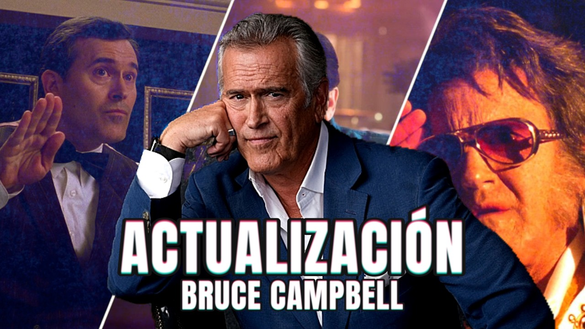
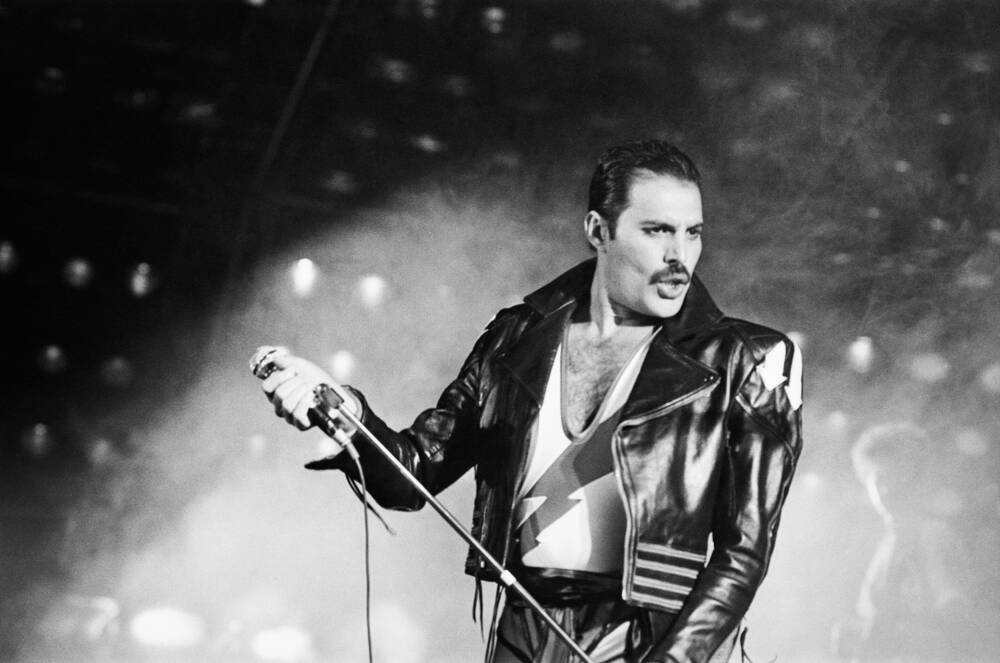

Legendario actor de 'El Hombre Araña' revela que le quedan 5 años de vida: "He decidido vivir con ello"
El artista, también recordado por su papel en Evil Dead, reveló que tiene un pronóstico de aproximadamente cinco años tras ser diagnosticado con un cáncer cuyo tipo no ha hecho público.
Leer más

Freddie Mercury: 80 años del nacimiento de la legendaria voz de Queen
Freddie Mercury nació un 5 de septiembre de 1946 y, con el paso de los años, se convirtió en la legendaria voz de Queen. A 80 años de su nacimiento, su música sigue más viva que nunca.
Leer más
Michelle Soifer recuerda agresión de Kevin Blow y revela detalles de violencia durante su relación
La artista recordó la violencia que, según su testimonio, sufrió durante su relación con Kevin Blow y contó detalles de una agresión ocurrida en el departamento donde vivía con su padre.
Leer más